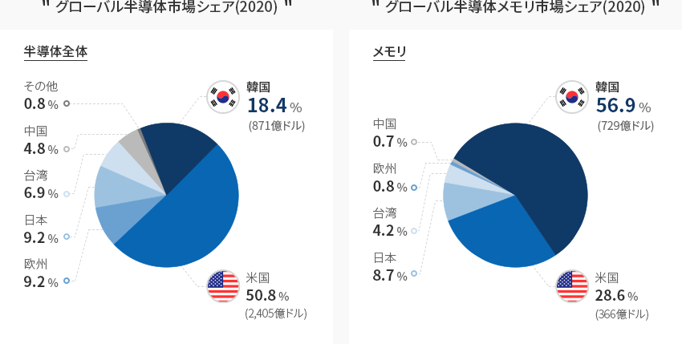
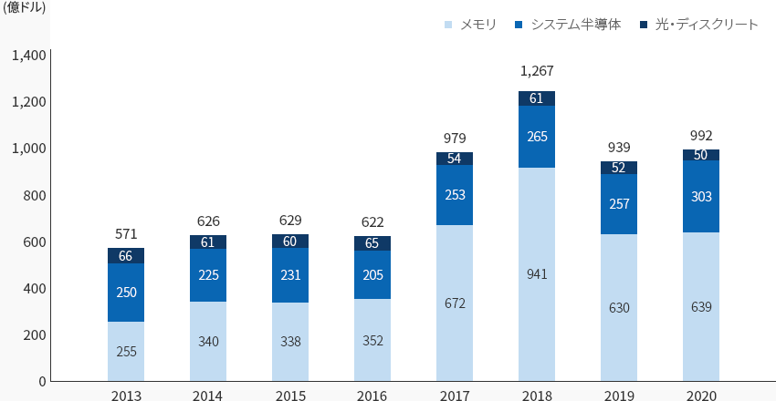
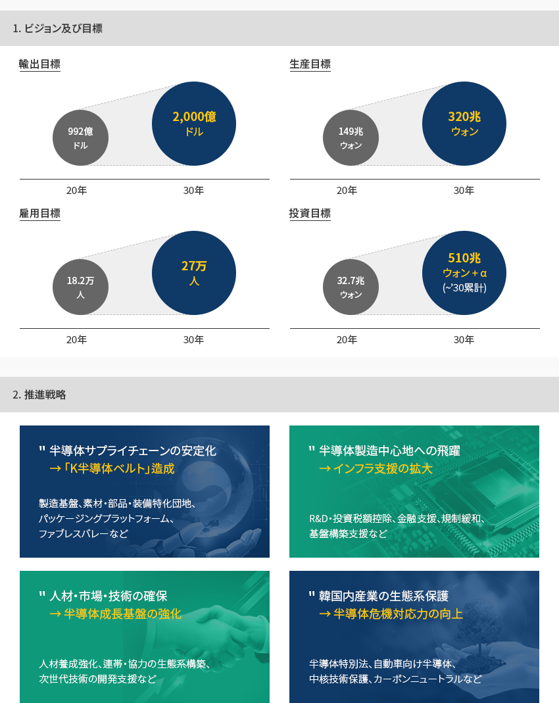
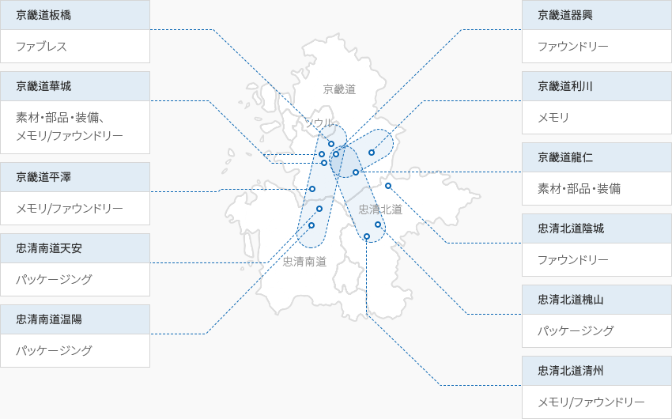

半導体
- Home
- Why KOREA
- 産業
- 半導体
半導体
Semiconductor
-
半導体メモリ 世界トップ 総合半導体世界2位を記録 コンテンツを閉じる半導体メモリ 世界トップ 総合半導体世界2位を記録2020年基準で、韓国のグローバル半導体市場におけるシェアは18.4%で、2013年以来世界2位を維持している。
特に、全世界の半導体メモリ市場の56.9%を占めており、DRAM71.1％、NAND44.9％を占めている。
韓国は半導体メモリにおいて、世界最高水準の技術力を保有しており、競争優位を守るために持続的な研究開発と投資に
重点を置いている。また、韓国は超微細加工工程の技術力に基づき、ファウンドリ市場シェアの拡大も推進している。グローバル半導体市場シェア(2020) 半導体全体- 韓国 18.4%(871億ドル)
- 米国 50.8%(2,405億ドル)
- 日本 9.2%
- 欧州 9.2%
- 台湾 6.9%
- 中国 4.8%
- その他 0.8%
グローバル半導体メモリ市場シェア(2020) メモリ- 韓国 56.9%(729億ドル)
- 米国 28.6%
- 日本 8.7%
- 台湾 4.2%
- 欧州 0.8%
- 中国 0.7%
 ※ 資料 : OMDIA 2021
※ 資料 : OMDIA 2021 -
韓国最大の輸出品目として 国家経済を主導 コンテンツを開く韓国最大の輸出品目として 国家経済を主導2020年の韓国の半導体輸出総額は992億ドル、そのうち半導体メモリが639億ドルで半導体輸出総額の64.4%を占める。
半導体は韓国最大の輸出品目であり、2020年基準で輸出全体の19.3%を占め、韓国経済と産業をリードしている「韓国の半導体輸出推移」(単位: 億ドル)韓国の半導体輸出推移 연도별 メモリ , システム半導体, 光・ディスクリート 区分 2013 2014 2015 2016 2017 2018 2019 2020 メモリ 255 340 338 352 672 941 630 639 システム半導体 250 225 231 205 254 265 257 303 光・ディスクリート 66 61 60 65 54 61 52 50 ごうけい 571 626 629 622 979 1,267 939 992
-
グローバル素材・部品・装備企業の 韓国半導体市場への進出拡大 コンテンツを開くグローバル素材・部品・装備企業の 韓国半導体市場への進出拡大韓国の主力産業である半導体を基盤とした素材、部品、装備分野の多くのグローバル企業が韓国に進出している。
반도半導体エッチング及び蒸着装備を主力とする米国のラムリサーチは、2011年ラムリサーチマニュファクチャリングコリアを設立して以来、
持続的に韓国での生産量を増やしており、その結果、2019年には韓国生産装備、5000号機を出荷した。今年末には龍仁市に研究開発センターをオープンし、中核技術/装備を韓国で開発することで
韓国の生態系強化に重要な役割をするものとみられる。台湾のシリコンウェハーメーカーのグローバルウェーハズ(環球晶円)は韓国にMEMCコリアを設立し、
2019年に第2工場を増設して12インチのシリコンウェハーを生産している。先端EUV露光装置を独占的に供給しているASMLは華城に先端EUVクラスターを造成する計画であり、
TOK、デュポン、メルクなどの半導体素材メーカーは韓国で生産するための投資を拡大している。
自動車向け半導体を開発するオンセミコリアも韓国への投資拡大を通じて電気自動車市場の成長に備えていく計画だ。
-
総合半導体強国の実現に向けた 「K半導体戦略」発表 コンテンツを開く総合半導体強国の実現に向けた 「K半導体戦略」発表韓国政府は「システム半導体発展戦略(2019.4)」、「人工知能半導体産業発展戦略(2020.10)」、「K半導体戦略(2021.5)」を通じて、
半導体メモリを超えてシステム半導体を育成し、総合半導体強国の実現に向けての強い意志を持っている。2030年までに世界最高の半導体サプライチェーンを構築するという目標に向けて投資税額控除率を最大5倍以上(6～10％)に引き上げ、
1兆ウォン以上の「半導体等設備投資特別資金」を新設し、ファウンドリー、素材・部品・装備及びパッケージング施設投資を支援する予定である。なお、半導体製造施設関連規制の合理化及び用水、電力などのインフラ構築のための政府支援を拡大する計画だ。「ビジョン : 2030年世界最高の半導体サプライチェーンの構築」-
1. ビジョン及び目標
- 輸出目標 : 20年(992億ドル $) > 30年(2,000億ドル $)
- 生産目標 : 20年(149兆ウォン) > 30年(320兆ウォン)
- 雇用目標 : 20年(18.2万人) > 30年(27万人)
- 投資目標 : 20年(32.7兆ウォン) > 30年(510兆ウォン + α)(~’30累計)
-
2. 推進戦略
- 半導体サプライチェーンの安定化 → 「K半導体ベルト」造成 : 製造基盤、素材・部品・装備特化団地、パッケージングプラットフォーム、ファブレスバレーなど
- 半導体製造中心地への飛躍 → インフラ支援の拡大 : R&D・投資税額控除、金融支援、規制緩和、基盤構築支援など
- 人材・市場・技術の確保 → 半導体成長基盤の強化 : 人材養成強化、連帯・協力の生態系構築、次世代技術の開発支援など
- 韓国内産業の生態系保護 → 半導体危機対応力の向上 : 半導体特別法、自動車向け半導体、中核技術保護、カーボンニュートラルなど
-
1. ビジョン及び目標
-
サムスン電子、SKハイニックスを中心とした 半導体クラスター コンテンツを開くサムスン電子、SKハイニックスを中心とした 半導体クラスター韓国の半導体メーカーは京畿道エリアに集中しており、それ以外は忠清北道や忠清南道などに一部分布している。
板橋-器興-華城-平澤-温陽地域と利川-清州地域が龍仁とつながり、世界最大の半導体サプライチェーンであるK半導体ベルトを完成する計画だ。サムスン電子は京畿道水原、器興、華城に続いて平澤に工場を建設することで平澤に世界最大の半導体生産ベルトを構築する予定で、
SKハイニックスは京畿道龍仁市に448万㎡規模の半導体クラスターを構築し、2021年に着工し2024年からは本格的に
半導体を量産する計画である。龍仁クラスターには素材・部品・装備特化団地を造成し、需要企業と供給企業が中核となる素材・部品・装備品目を
共同開発する超大形協力モデルを推進する計画だ。板橋地域を韓国型ファブレスバレーとして造成し、中部圏にファウンドリー生産基盤とパッケージング工程基盤を利用した
パッケージング特化革新基地が構築される。「K半導体ベルト」- 京畿道板橋: ファブレス
- 京畿道華城: 素材・部品・装備, メモリ/ファウンドリー
- 京畿道平澤: メモリ/ファウンドリー
- 忠清南道天安: パッケージング
- 忠清南道温陽: パッケージング
- 京畿道器興: ファウンドリー
- 京畿道利川: メモリ
- 京畿道龍仁: 素材・部品・装備
- 忠清北道陰城: ファウンドリー
- 忠清北道槐山: パッケージング
- 忠清北道清州: メモリ/ファウンドリー


Invest KOREA
半導体/ティスプレイPM
パク・ドンユル
基幹産業誘致チーム
T.+82-2-3460-7726
おすすめの立地情報
産業団地情報
[Gyeonggi-do Suwon City] Suwon Deltaplex (Block 3)
Click [Go to Detailed Information] to go to the relevant information screen of
Smart K-Factory service of Industrial Complex Corporation.
-
Complex nameSuwon Deltaplex (Block 3)
-
Initial designation date2008.12.26
-
Designated area(m2)847,409
-
ManagementGyeonggi-do Suwon City
-
Nearby RailwaySuwon Station
-
Distance from station(km)4
-
Nearby AirportGimpo International Airport
-
Distance from airport(km)49
-
Industrial water Supply capacity(ton/day)3195(㎥/day)
-
Affiliation local governmentGyeonggi-do Suwon City
-
Population1,190,074
産業団地情報
[Gyeonggi-do Seongnam City] Pangyo 2nd Techno Valley[formerly: Pangyo
Creative Economy Valley]
Click [Go to Detailed Information] to go to the relevant information screen of
Smart K-Factory service of Industrial Complex Corporation.
-
Complex namePangyo 2nd Techno Valley[formerly: Pangyo Creative Economy Valley]
-
Initial designation date2015.11.30
-
Designated area(m2)430,402
-
ManagementGyeonggi-do Seongnam City
-
Nearby RailwayOksu Station
-
Distance from station(km)19
-
Nearby AirportGimpo International Airport
-
Distance from airport(km)45
-
Industrial water Supply capacity(ton/day)2025(㎥/day)
-
Affiliation local governmentGyeonggi-do Seongnam City
-
Population940,668
産業団地情報
[Gyeonggi-do Hwaseong City] Hwaseong Songsan Techno Park General Industrial
Complex
Click [Go to Detailed Information] to go to the relevant information screen of
Smart K-Factory service of Industrial Complex Corporation.
-
Complex nameHwaseong Songsan Techno Park General Industrial Complex
-
Initial designation date2016.12.26
-
Designated area(m2)528,723
-
ManagementHwaseong Urban Corporation
-
Nearby RailwaySuwon Station
-
Distance from station(km)34
-
Nearby AirportGimpo International Airport
-
Distance from airport(km)59
-
Industrial water Supply capacity(ton/day)2,034(㎥/day)
-
Affiliation local governmentGyeonggi-do Hwaseong City
-
Population842,864
産業団地情報
[Gyeonggi-do Gunpo City] Gunpo High-tech Industrial Complex
Click [Go to Detailed Information] to go to the relevant information screen of
Smart K-Factory service of Industrial Complex Corporation.
-
Complex nameGunpo High-tech Industrial Complex
-
Initial designation date2013.12.27
-
Designated area(m2)287,619
-
ManagementGyeonggi-do Gunpo City
-
Nearby RailwaySuwon Station
-
Distance from station(km)10
-
Nearby AirportGimpo International Airport
-
Distance from airport(km)38
-
Industrial water Supply capacity(ton/day)1,376(㎥/day)
-
Affiliation local governmentGyeonggi-do Gunpo City
-
Population275,508
産業団地情報
[Chungcheongbuk-do Jeungpyeong County] Jeungpyeong 2nd General Industrial
Complex
Click [Go to Detailed Information] to go to the relevant information screen of
Smart K-Factory service of Industrial Complex Corporation.
-
Complex nameJeungpyeong 2nd General Industrial Complex
-
Initial designation date2009.11.20
-
Designated area(m2)702,807
-
ManagementChungcheongbuk-do Jeungpyeong County
-
Nearby RailwayJeungpyeong Station
-
Distance from station(km)6
-
Nearby AirportCheongju International Airport
-
Distance from airport(km)17
-
Industrial water Supply capacity(ton/day)3,348(㎥/day)
-
Affiliation local governmentChungcheongbuk-do Jeungpyeong County
-
Population81,949
産業団地情報
[Gyeonggi-do Pyeongtaek City] LG Digital Park General Industrial Complex
Click [Go to Detailed Information] to go to the relevant information screen of
Smart K-Factory service of Industrial Complex Corporation.
-
Complex nameLG Digital Park General Industrial Complex
-
Initial designation date2012.04.26
-
Designated area(m2)125,312
-
ManagementGyeonggi-do Pyeongtaek City
-
Nearby RailwayOsan Station
-
Distance from station(km)22
-
Nearby AirportGimpo International Airport
-
Distance from airport(km)72
-
Industrial water Supply capacity(ton/day)-
-
Affiliation local governmentGyeonggi-do Pyeongtaek City
-
Population527,166